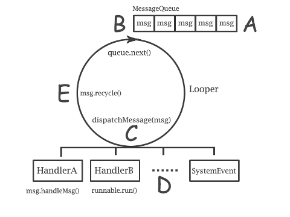

消息处理机制
相关文件
frameworks/base/core/java/android/os/Handler.java
frameworks/base/core/java/android/os/Looper.java
frameworks/base/core/java/android/os/MessageQueue.java
frameworks/base/core/java/android/os/Message.java
为什么需要消息处理机制
在Android中，多个线程互相访问彼此的成员变量，必须加入同步机制，因此引入了消息处理的机制。
例如应用程序启动，主线程绘制UI，并保持一个闭合循环的状态才能使该应用不会退出，这个闭合循环的
状态被抽象成Looper。如果其他线程在执行任务的过程中，要更新UI怎么办？需要一种机制能够插入到当前
闭合循环的UI线程，并执行一些特定的任务，这个机制被抽象成MessageQueue，所有任务以队列的形式存在，
并按照时间顺序排队，顺序执行。如何加入自定义的任务？具体任务是什么？何时加入？需要另一种机制来
提供——Handler。
非UI线程通过这种机制就能够转换到UI的线程执行，保证了UI更新的安全性和合理性。
消息处理的示例
-
从以下示例我们可以了解几个重要的概念：
Looper、Message、MessageQueue、Handler
- Looper
- 闭合的循环处理——环境。
- Message
- 传递的消息对象——载体。
- MessageQueue
- 消息机制的队列——规则。
- Handler
- 消息处理的方法——生产者和消费者。
消息处理的图例

消息处理的示例代码
class LooperThread extends Thread {
public Handler mHandler;
public void run() {
// 准备消息循环
Looper.prepare();
mHandler = new Handler() {
public void handleMessage(Message msg) {
// 消息处理
}
};
// 发送消息
mHandler.sendMessage(msg);
// 消息循环
Looper.loop();
}
}
Looper
-
首先我们需要了解必须有一个闭合的循环存在，才能不断的接收并处理消息，它就是Looper对象。
-
Looper包含两个重要的对象：相关的线程对象和消息队列。
-
当Looper初始化后，会进入一个闭合的消息循环，以等待消息的到来（阻塞）。
Looper初始化
private Looper() {
// 初始化消息队列
mQueue = new MessageQueue();
mRun = true;
mThread = Thread.currentThread();
}
Looper.prepare()
-
sThreadLocal是一个
ThreadLocal类型的对象，它保存了当前线程相关的Looper对象，并封装成ThreadLocal.Values。Android为每个Thread对象添加了ThreadLocal.Values对象，并在必要时取回相应的Looper对象。(线程本地存储)
-
取回Looper对象的目的在于，属于该UI线程的方法处理，必须在该线程的循环里才能执行，而Looper对象正是该线程循环的抽象。
public static final void prepare() {
if (sThreadLocal.get() != null) {
throw new RuntimeException("Only one Looper may be created per thread");
}
sThreadLocal.set(new Looper());
}
Looper.loop()
-
Looper实现了一个闭合的循环，并等待消息队列中的消息，这个等待过程是阻塞的，不会占用CPU太多的资源。
-
循环退出的唯一条件是
msg.target为null。即没有任何相关的Handler对象来处理这个消息。
-
消息的处理会调用target对象的dispatchMessage方法，即
Handler.dispatchMessage()方法。
public static final void loop() {
Looper me = myLooper();
MessageQueue queue = me.mQueue;
while (true) {
// 该方法会阻塞当前线程
Message msg = queue.next();
if (msg != null) {
// 当target为null时退出循环
if (msg.target == null) {
return;
}
......
// 调用target的dispatchMessage()方法
msg.target.dispatchMessage(msg);
msg.recycle();
}
}
}
MessageQueue
-
接下来我们需要讨论消息是如何被接收和提取的。MessageQueue是所有消息的传输带。
-
它包含一个重要的数据对象：
Message，它是消息的载体，并且通过该对象的next成员可以遍历整个消息的链表。
-
它还包含两个重要的方法：
next()和enqueueMessage()。
MessageQueue.next()
-
在Looper章节我们讨论了Looper.loop()方法会调用MessageQueue.next()方法等待消息的到来，该方法在没有任何消息时，会采用
wait()方法阻塞。
final Message next() {
boolean tryIdle = true;
while (true) {
long now;
Object[] idlers = null;
// 查询队列中的消息处理时间是否是现在需要处理的，
// 是则返回该消息，否则返回空。
synchronized (this) {
now = SystemClock.uptimeMillis();
Message msg = pullNextLocked(now);
if (msg != null) return msg;
if (tryIdle && mIdleHandlers.size() > 0) {
idlers = mIdleHandlers.toArray();
}
}
......
// 没有消息处理，则等待
synchronized (this) {
try {
if (mMessages != null) {
if (mMessages.when-now > 0) {
Binder.flushPendingCommands();
this.wait(mMessages.when-now);
}
} else {
Binder.flushPendingCommands();
this.wait();
}
}
catch (InterruptedException e) {
}
}
}
}
final Message pullNextLocked(long now) {
Message msg = mMessages;
if (msg != null) {
if (now >= msg.when) {
mMessages = msg.next;
if (Config.LOGV) Log.v(
"MessageQueue", "Returning message: " + msg);
return msg;
}
}
return null;
}
MessageQueue.enqueueMessage()
-
消息处理队列处理消息先后顺序的依据是时间，当任何一个消息插入到队列中后，都需要根据时间进行排序后，再通知线程处理。
-
该方法最后会调用
notify()方法来唤醒睡眠中的MessageQueue对象，并返回一个需要处理的消息，参见MessageQueue.next()。
final boolean enqueueMessage(Message msg, long when) {
......
// 根据时间进行排序
synchronized (this) {
......
msg.when = when;
Message p = mMessages;
if (p == null || when == 0 || when < p.when) {
msg.next = p;
mMessages = msg;
this.notify();
} else {
Message prev = null;
while (p != null && p.when <= when) {
prev = p;
p = p.next;
}
msg.next = prev.next;
prev.next = msg;
this.notify();
}
}
return true;
}
Handler
-
至此，我们已经了解了消息的传播途径和机制，但仍然有两个问题没有解决：消息的生产者和消费者是什么？消息的原型是什么？
-
以上我们了解的是Android关于消息处理的内部机制，对用使用者来说，必须有一个很好的接口提供给使用者，它就是Handler。
-
Handler用来产生消息(生产者)，并且当消息到达时，执行具体的任务(消费者)。
Handler的构造方法
-
Handler有四种构造方法，主要用来初始化特定的
Looper和回调Handler.Callback
public Handler() {
......
mLooper = Looper.myLooper();
......
mQueue = mLooper.mQueue;
mCallback = null;
}
public Handler(Callback callback) {
......
mLooper = Looper.myLooper();
......
mQueue = mLooper.mQueue;
mCallback = callback;
}
public Handler(Looper looper) {
mLooper = looper;
mQueue = looper.mQueue;
mCallback = null;
}
public Handler(Looper looper, Callback callback) {
mLooper = looper;
mQueue = looper.mQueue;
mCallback = callback;
}
什么是Handler.Callback
-
Callback是一个消息处理的回调，该回调只有一个handleMessage()方法，Handler在消息到达时，优先处理的是消息中的Callback对象回调，其次是Handler对象中的Callback对象回调，最后才会处理重载的handleMessage()方法。
public interface Callback {
public boolean handleMessage(Message msg);
}
消息的生产者
-
Handler是消息的生产者，使用者调用Handler的
send*()方法用来产生消息，并调用MessageQueue.enqueueMessage把该消息插入到消息队列中。
-
Handler在将消息插入到队列中时，做了一件重要的事情，将当前Handler对象赋给了Message对象的target成员，而Looper在取回消息时，便会调用该Handler对象的方法执行相关任务，因此不用担心在一个Looper对象循环里有多个Handler来投递消息。
public boolean sendMessageAtTime(Message msg, long uptimeMillis) {
boolean sent = false;
MessageQueue queue = mQueue;
if (queue != null) {
msg.target = this;
sent = queue.enqueueMessage(msg, uptimeMillis);
}
return sent;
}
消息的消费者
-
回忆之前讨论的Looper.loop()方法中等待消息到来，并执行消息成员
target的dispatchMessage()方法来消费该消息。target对象即是Handler的对象实例。
-
dispatchMessage()方法根据具体消息来产生相应的行为，这里用到了我们上面提到的Callback对象。在没有其他处理方法的情况下（如Callback为null），调用重载的handleMessage()方法。
-
由此段代码，我们也可以分析得出，消息的传递不一定需要写Handler.handleMessage()的方法，根据构造方法的不同和Message对象的不同有很多实现的方式。
public void dispatchMessage(Message msg) {
if (msg.callback != null) {
handleCallback(msg);
} else {
if (mCallback != null) {
if (mCallback.handleMessage(msg)) {
return;
}
}
handleMessage(msg);
}
}
Message
-
消息传递的完整路径分析完毕后，我们可以了解最后一个组成部分：消息的载体——
Message。
-
Android将消息封装成Message类，该类实现了Parcelable接口，并且支持Binder。
Message的成员
public final class Message implements Parcelable {
public int what;
public int arg1;
public int arg2;
public Object obj;
public Messenger replyTo;
long when;
Bundle data;
Handler target;
Runnable callback;
Message next;
......
}
Message.obtain()
-
Message类可以使用new声明，但更多情况下应该使用
obtain*()方法来获取全局的Message对象，避免生产新的对象。如果全局的Message对象为空，Android会自动new一个新的对象。
public static Message obtain() {
synchronized (mPoolSync) {
if (mPool != null) {
Message m = mPool;
mPool = m.next;
m.next = null;
return m;
}
}
return new Message();
}
{kind=link}